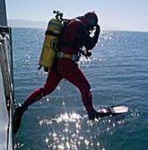
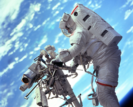

What You Should Know - Choose Your Presentation Tool: Adding and Subtracting Air Molecules
 Important Vocabulary
Important Vocabulary
- Atmosphere - layer of gases surrounding Earth that protects us from the Sun’s harmful rays and lets in the warmth and energy we need from the sun to live
- Atom - an extremely tiny particle that is the building block of all matter
- Molecule - two or more atoms joined together; everything is made up of molecules
- Fraction - a part of a whole; made up of a numerator and a denominator
- Common Denominators - when two or more fractions have the same denominator
The Air We Breathe
Take a deep breath. Let it out slowly. Most of the time, we do not think about breathing or air. Breathing just happens and air always surrounds us. The air we breathe is what keeps us alive, so it must be important!
Air:
- Surrounds Earth
- Protects the Earth from the extreme conditions of space
- Is a mixture of gases
- Keeps plants and animals alive
To breathe underwater or in space, we carry air in special tanks.
 
KWL Charts
Before learning a new topic, it helps to organize our ideas. One way to organize ideas is with a KWL chart. A KWL chart is where we write down what we know about a topic, what we want to know, and what we learned. “K” stands for Know, “W” stands for Want, and “L” stands for Learn.
Shown here is a K list. It tells us what the presenter knows about air.
Career Connection and Real-World Application
Atmospheric and Space Scientist
Atmospheric and Space Scientists is a really fancy name for a meteorologist, or weather person. Meteorologists study the atmosphere and weather patterns to make weather forecasts. They gather their information from satellites, air stations, and radar to help them with their forecasts, which they share on the radio, in the news, in newspapers, or online.
Accountant
Accountants use math to study and track financial information to help people make decisions about how to spend and save their money. Knowing how to complete calculations with fractions and decimals is very important to their work as they look at costs, calculate taxes, and prepare financial statements for the people they work with.